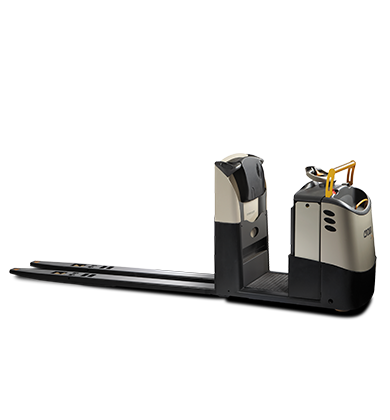
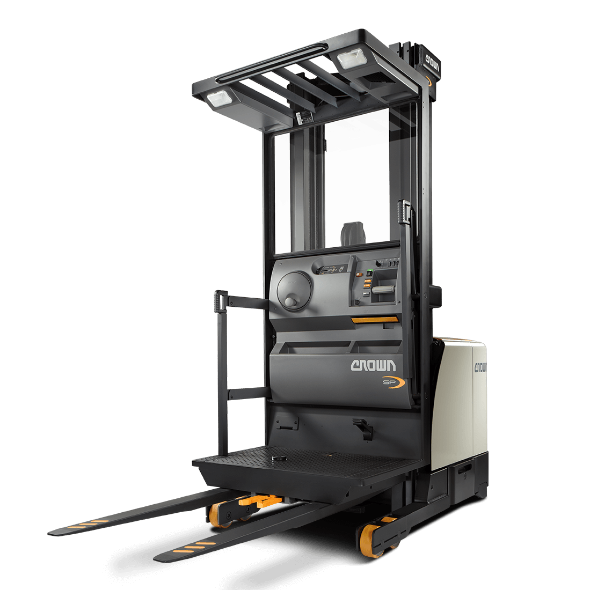

Serie GPC
El recogepedidos de la serie GPC de Crown se centra en todo el proceso de picking, independientemente del trabajo. Estos equipos mejoran la productividad, la versatilidad de aplicaciones, la ergonomía y la confiabilidad, con el fin de proporcionar rendimiento a largo plazo y el mejor retorno de la inversión.

Serie SP
Desde una amplia ventana para el operador hasta un sistema de estabilidad sólido como una roca, la serie SP de Crown está diseñada para ayudar al operador a mantener su confianza al trabajar en altura y realizar diversas tareas de forma eficiente.